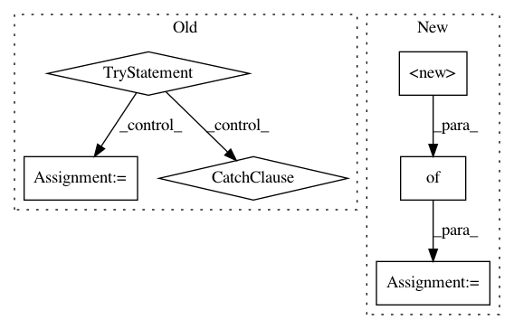

9f54bcc21b1744f2850a35e54903f3581d14badb,homeassistant/components/mysensors.py,,setup,#Any#Any#,70
Before Change
GATEWAYS = {}
for index, port_item in enumerate(port):
persistence = config[DOMAIN].get(CONF_PERSISTENCE, True)
try:
persistence_f_item = persistence_file[index]
except IndexError:
_LOGGER.exception(
"No persistence_file is set for port %s,"
" disabling persistence", port_item)
persistence = False
persistence_f_item = None
GATEWAYS[port_item] = setup_gateway(
port_item, persistence, persistence_f_item)
return True
After Change
// Setup mysensors platforms
mysensors_config = config.copy()
for component in COMPONENTS_WITH_MYSENSORS_PLATFORM:
mysensors_config[component] = {CONF_PLATFORM: "mysensors"}
if not bootstrap.setup_component(hass, component, mysensors_config):
return False
def callback_factory(port, devices):
In pattern: SUPERPATTERN
Frequency: 3
Non-data size: 6
Instances
Project Name: home-assistant/home-assistant
Commit Name: 9f54bcc21b1744f2850a35e54903f3581d14badb
Time: 2015-12-23
Author: marhje52@kth.se
File Name: homeassistant/components/mysensors.py
Class Name:
Method Name: setup
Project Name: home-assistant/home-assistant
Commit Name: e8ad76c8164a97d328032e46802aeffe09ea9808
Time: 2016-09-08
Author: kellerza@gmail.com
File Name: tests/util/test_yaml.py
Class Name: TestYaml
Method Name: test_duplicate_key
Project Name: home-assistant/home-assistant
Commit Name: af8cd63838d035ad80420f4296cdbc312fe407ca
Time: 2018-05-05
Author: mail+github@tinloaf.de
File Name: homeassistant/components/notify/matrix.py
Class Name: MatrixNotificationService
Method Name: send_message